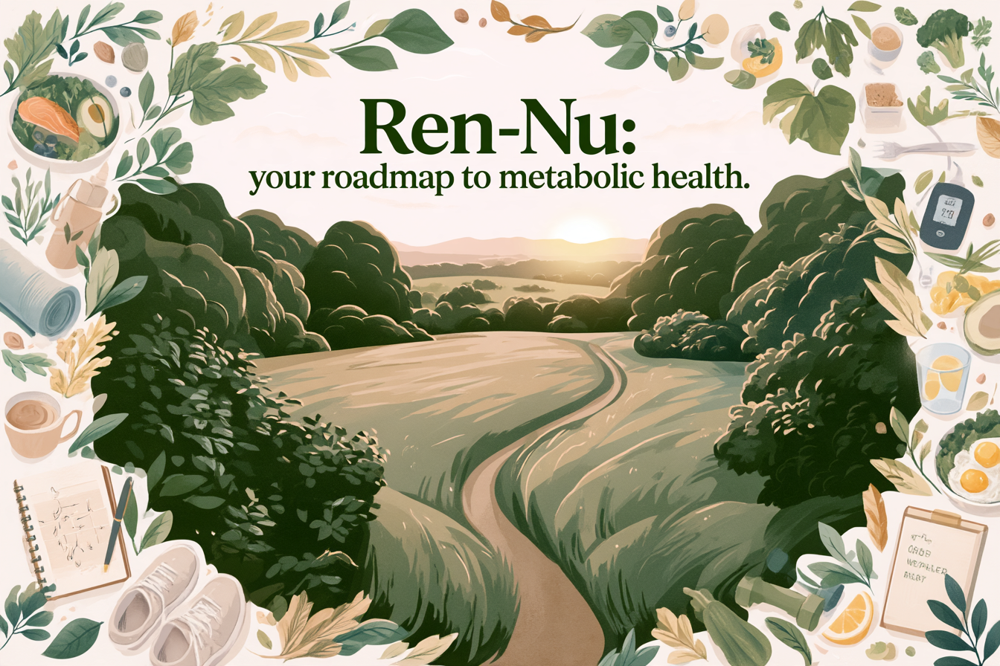
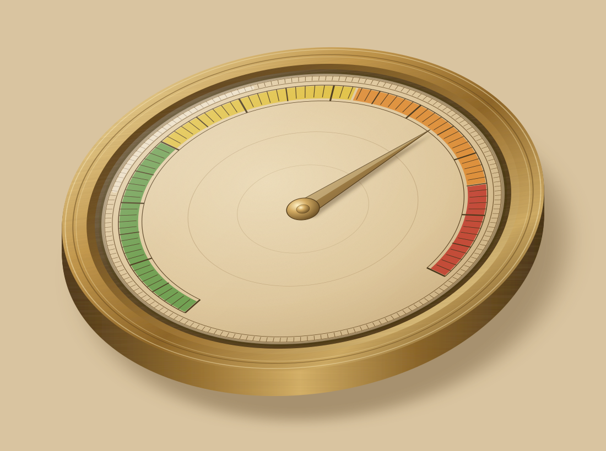

Build your foundation
Prepare, establish your baseline, and meet your dietitian.



Ren-Nu™ brings the education, personalized guidance, tracking tools, and ongoing support together in one structured program.
Turn metabolic and kidney-health research into practical everyday decisions.
16 weeks of guided educationAdapt the program to your kidney function, labs, preferences, and daily life.
3 individual dietitian sessionsUse nutrition, ketone, laboratory, and symptom tracking to learn how your body responds.
Tracking tools includedJoin live coaching calls and a community of people who understand PKD.
Ongoing live-call accessA medical food developed by PKD researchers to support nutritional ketosis and the dietary management of polycystic kidney disease.

A structured, personalized journey designed to help you build changes that last.
Prepare, establish your baseline, and meet your dietitian.
Begin safely with guidance and real-time support.
Learn how your body responds and refine your approach.
Build the skills and confidence to continue long term.
Enrollment is offered on a rolling basis — participants may begin once their application is reviewed and approved.
Across published studies, clinical research, and real-world program data, we see a consistent direction of change in outcomes that matter to people living with PKD.
Excellent adherence • Reported improvements in quality of life
Observed across different study designs and populations; not every outcome was assessed in every study.
Watch below as program participants share improvements in kidney function, metabolic health, daily symptoms, confidence in managing PKD, and overall well-being.
Experiences vary by individual. Ren-Nu™ is an educational program designed to support informed lifestyle changes.

Ren-Nu™ brings together PKD researchers, clinicians, renal nutrition experts, and patients who understand the condition firsthand. The result is guidance grounded in evidence—and designed for real life.
Researchers · Clinicians · Nutrition experts · Patients
Below are answers to common questions about the Ren-Nu™ program.
No. Ren-Nu™ is a structured nutrition and lifestyle education program. It does not replace medical care, and participants are encouraged to work closely with their healthcare providers.
The program provides structured guidance tailored specifically for individuals living with PKD, including renal-safe nutrient considerations. Participants should consult their physician before implementation.
No prior experience is required. The program begins with foundational education and progresses in a structured, guided manner.
Ren-Nu™ is designed for individuals with PKD who are motivated to engage in structured nutrition education. Eligibility is reviewed during the application process.
Participants retain lifetime access to weekly coaching and community calls, as well as continued access to the HIPAA-compliant data platform.